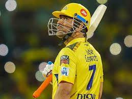

<!DOCTYPE html>
<html>
    <head>
    <title>captain cool</title>
    </head>
</html>
<body><div style="float: right;"><marquee width:>
    
</marquee>
</div>
    <h1 style="text-align: center; color:red ; font-style: italic;"><b><u>COOL CAPTAIN</u></b></h1>
    <br>
    <p><b>Mahendra Singh Dhoni</b> ( born on <a style="color: rgb(16, 30, 231);">7.7.1981</a>) is an Indian professional cricketer.<br>
        He was captain of the Indian national team in limited-overs formats from <a style="color: rgb(18, 11, 209);"> 2007-2017</a> and in Test cricket from <a style="color: rgb(19, 39, 218);"> 2008 - 2014</a>.<br>
        <b>Dhoni</b> is widely considered one of the greatest cricket captains, wicket-keeper-batsman and finishers in the history of cricket.<br>
        He plays as a right-handed wicket-keeper-batsman and is known for his calm captaincy and his ability to finish matches in tight situations.<br>
         He is also the current captain of Chennai Super Kings in the Indian Premier League.</p>
        <h2>Playing Style</h2>
        <hr>
        <p><b>Dhoni</b> is a right-handed batsman and wicket-keeper. <b>Dhoni</b> is an unorthodox batsman. He deviates from conventional coaching manuals and showcases his unique batting technique. <br>
            <b>Dhoni</b> displays a proclivity for hitting full-length deliveries towards the Long-on, Long-off, and Midwicket regions, rather than the conventional Cover region. <br>
            Furthermore, he demonstrates remarkable skill in playing pull shots and hook shots off short-pitched deliveries, putting pressure on the bowler to adjust their line and length accordingly.<br>
            <b>Dhoni</b> holds the bat with a firm grip at the bottom of the handle, striking the ball with force and precision to clear the boundary. Despite this, he still retains the capability to produce awe-inspiring, long sixes.<br>
              He is known for his unorthodox captaincy and cool-headed demeanor on the field. As a batsman, he is recognized for his remarkable finishing skills in high-pressure situations, and his aggressive captaincy has earned him the reputation of a successful leader in Indian cricket.<br>
               He has also been renowned for his lightning-fast glove-work behind the stumps.</p>
        <h2>International records</h2>
        <hr>
            <h3>Test cricket record</h3>
            <ul>
            <li><b>Dhoni</b> is the first Indian wicket-keeper to score<a style="color: rgb(16, 30, 231);"> 4,000</a> Test runs.</li>
            <li><b>Dhoni</b>, with <a style="color: rgb(16, 30, 231);">294</a> dismissals in his career, ranks first in the all-time dismissals list by Indian wicket-keepers.</li>
            </ul>
            <h3>ODI cricket record</h3>
            <ul>
            <li><b>Dhoni</b> is the third captain (and the first non-Australian) overall to win <a style="color: rgb(16, 30, 231);">100</a> games.</li>
            <li>First player to pass <a style="color: rgb(16, 30, 231);">10,000</a> runs in ODI cricket with having a career average of over <a style="color: rgb(16, 30, 231);">50</a>.</li>
            <li>Most not outs <a style="color: rgb(16, 30, 231);">(84)</a> in ODIs.</li>
            </ul>
            <h3>T20I cricket record</h3>
            <ul>
            <li>Most stumpings as wicket-keeper in T20Is <a style="color: rgb(16, 30, 231);">(34)</a></li>
            <li><b>Dhoni</b> holds the record for playing the most T20I innings <a style="color: rgb(16, 30, 231);">(76)</a> and scored the most runs <a style="color: rgb(16, 30, 231);">(1,153)</a> before scoring a fifty</li>
            </ul>
        <h2>Indian Premier League</h2>
         <hr>
         <p><b>Dhoni</b> was contracted by the Chennai Super Kings (CSK) for <a style="color: rgb(16, 30, 231);">US$1.5 million.</a>
            This made him the most expensive player in the IPL for the first season auctions.<br>
             Under his captaincy, CSK won the <a style="color: rgb(16, 30, 231);">2010, 2011, 2018, 2021 & 2023</a> Indian Premier League titles and the <a style="color: rgb(16, 30, 231);">2010 & 2014</a> Champions League T20 titles and <br>
             ended up as a runner-up in<a style="color: rgb(16, 30, 231);"> 2008, 2012, 2013, 2015 & 2019</a> IPL league seasons.</p>
</body>
</html>
